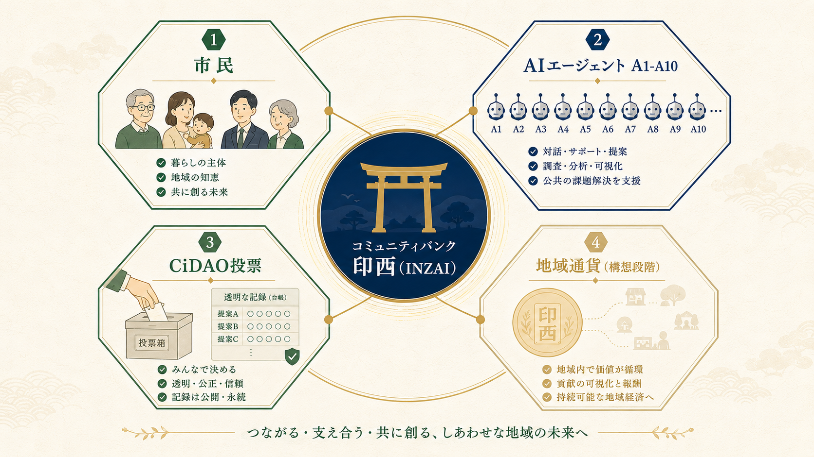
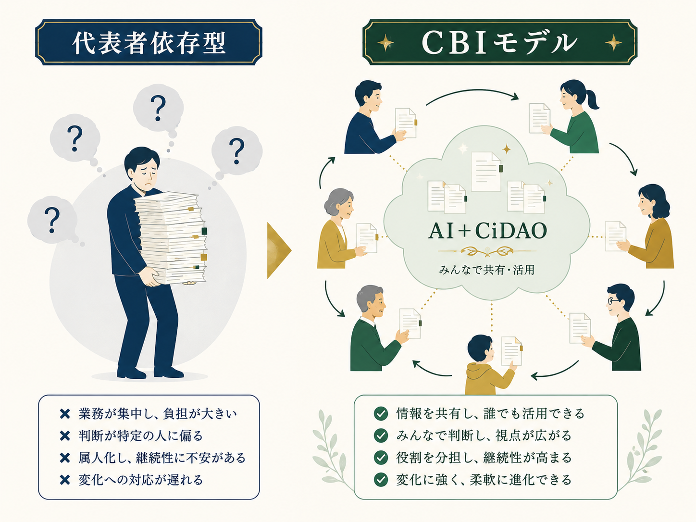

登録フォームに記入
「やってみたいこと」「できそうなこと」を 印西市の市民活動分野から数項目選ぶだけ。職歴・履歴書・自己PRの作成は一切不要です。
国内８自治体・海外８プラットフォームを公開情報で比較したところ、
「AIエージェントが伴走する新団体立ち上げ × 市民の声を行政に届けるCiDAO × 地域貢献度の自動可視化」を
同時に備える事例は、CBI（Community Bank INZAI）以外に確認できませんでした。
調査時点：2026年6月／公開情報ベース／確信度：中
印西市市民活動団体 登録番号 ０８－００１

FOUR PILLARS
市民の特技を眠らせない仕組み、AIによる運営の効率化、活動を客観指標で可視化する設計、そして地域経済への還流の構想。 この４点を組み合わせた市民活動団体の取り組みは、公開情報で確認できる範囲では他に見当たりません。
PILLAR Ⅰ
登録は「やってみたいこと」「できそうなこと」を 印西市の市民活動分野（保健・医療・福祉／社会教育／まちづくり／環境／子育て支援など）から数項目選ぶだけ（3分）。市の既存分類と同じ枠組みなので、既存の市民活動団体や市民活動支援センターと将来連携する際もスムーズです。あとは、AIエージェントが「同じ想いを持つ市民」「親和性のある既存の市民活動団体」「関心の重なる地域課題」を抽出して通知します。既存団体に参加する、仲間と新しい団体を立ち上げる、自分たちで取り組む、市民の声をまとめて行政に届ける――選ぶのは自分。登録解除もいつでも可能です。
PILLAR Ⅱ
CBIでは、事業運営の中核業務（依頼の受付・候補の抽出・提案文書の作成など）をAIエージェント A1〜A10 が分担し、運営方針はメンバーの提案・投票（CiDAO）で決めます。「中心に自動化、周縁に人間」——担当者の交代や離任があっても、ルールと記録は組織内に残り続けます。市民活動団体で起きやすい『代表者一人に依存して続かない』状態を、運用設計の段階から避ける仕組みです。
PILLAR Ⅲ
イベント企画／イベント登録／CiDAO提案／投票などの活動を通じて、登録者・登録団体に「地域貢献度」が自動的に積み上がる仕組みを設計中です。活動の活性度を客観指標で可視化することで、AIエージェントによる候補抽出にも「活発に動いている人・団体」を優先提示できる設計を目指します。
PILLAR Ⅳ
積み上がった地域貢献度を、将来的に地域通貨として活用する方向性も視野に入れています。会津若松市の「会津コイン」（決済中心）とは異なる、市民の活動を地域経済の循環に結びつける設計を検討する想定です。※現時点では未着手の構想段階です。
HOW IT WORKS
登録は3分で完了。その後の流れは下の3ステップだけです。 「登録したけれど何も起きない」を起こさないために、AIエージェントが受け身でも仲間・団体・課題を届けます。
「やってみたいこと」「できそうなこと」を 印西市の市民活動分野から数項目選ぶだけ。職歴・履歴書・自己PRの作成は一切不要です。
登録内容に近い「想いを持つ市民」「既存の市民活動団体」「関心の重なる地域課題」をAIエージェントが抽出して通知します。自分から探しに行く必要はありません。
既存団体に参加する、想いの近い仲間と新しい団体を立ち上げる、自分たちで取り組む、市民の声を行政に届ける橋渡しに参加する――どの形でも自分で選べます。合わなければ断ればOK、強制も連絡攻めもありません。
登録後の安心ポイント： 登録解除はいつでも可能／個人情報の公開範囲は最小限／市民活動団体（登録番号０８－００１）として法的責任を負って運営／断った理由は記録に残しません
DOMESTIC COMPARISON
全国の代表的な「市民人材バンク／市民参加プラットフォーム」と機能を比較しました。 ５つの中核機能をすべて備えるのは、現時点でCBIのみです。
| 事例 | 運営主体 | AI伴走の新団体立ち上げ | 市民の声を行政へ届けるCiDAO | 地域貢献度の可視化 | 市民活動団体登録 |
|---|---|---|---|---|---|
| CBI（印西市）このゆびとまれプロジェクト | 市民活動団体 | ◯ A1〜A10 | ◯ CiDAO実証 | △ 検討中 | ◯ 08-001 |
| 神戸市デジタル人材育成エコシステム | 市直営＋採択事業者 | × | × | × | —（市直営） |
| 西粟倉村（岡山）ローカルベンチャースクール | 村＋森の学校HD | △ 起業型伴走 | × | × | — |
| 加古川市加古川版Decidim | 市直営 | × | △ 意見集約のみ | × | — |
| 鎌倉市鎌倉スクールコラボファンド | 市教委 | × | × | × | — |
| 会津若松市スーパーシティ＋会津コイン | 市＋コンソーシアム | × | × | × 決済中心 | — |
| 総務省地域人材ネット | 国＋自治体 | × | × | × | — |
| サービスグラント民間プロボノ | NPO | × | × | × | —（自治体外） |
※ 公開情報での比較です（調査時点：2026年6月）。自治体公式サイト・PR TIMES・関連報道等を中心に確認しました。各自治体が非公開で展開している類似事業の有無までは追跡しきれていません。
GLOBAL COMPARISON
欧州・北米・アジアの代表的な市民参加プラットフォームと比較しても、 CBIが交差領域に立っていることが分かります。
| 事例 | 国／運営 | 主目的 | AI伴走の新団体立ち上げ | 市民の声を行政へ届ける | 地域貢献度の可視化 |
|---|---|---|---|---|---|
| CBI（日本・印西市） | 市民活動団体 | 仲間・団体・課題のマッチング＋自走支援 | ◯ A1〜A10 | ◯ CiDAO実証 | △ 検討中 |
| Decidimスペイン・バルセロナ | 市＋OSS財団 | 参加型民主主義（提案・投票） | × | △ 提案・投票 | × |
| Better Reykjavikアイスランド | NPO | 政策アイデア収集 | × | △ 政策アイデア | × |
| vTaiwan / Pol.is台湾 | g0v＋政府 | 合意形成 | × | △ 合意形成 | × |
| Nextdoor米国 | 営利企業 | 近隣SNS | × | × | × 広告モデル |
| TimeBanks USA米国 | NPO | 時間通貨で相互扶助 | × | × | △ 時間通貨 |
| SkillsFutureシンガポール | 国 | 国家規模スキル投資 | × | × | × 学習投資 |
| mVoting韓国・ソウル市 | 市 | 市民提案・参加型予算 | × | △ 市民提案 | × |
| Go Vocalベルギー | 民間SaaS | 自治体DX | × | △ 自治体DX | × |
VALUE FOR EACH
この唯一性は、印西市・協賛企業・市民のそれぞれに、異なる具体的なメリットをもたらします。
FOR THE CITY
FOR BUSINESS
FOR CITIZENS
FINDINGS
国内８事例・海外８事例を公開情報で比較した結果、CBIには以下の５点で他事例と異なる特徴がありました。
Decidim・mVoting は「市民提案・投票」が中心、TimeBanks は「市民同士の時間交換」、SkillsFuture は「学習機会への投資」が中心です。行政・事業者の依頼を起点に、市民の登録情報からAIが候補を提示する形は、公開情報で確認できる範囲では他事例に見つかりませんでした。
海外事例の AI 活用は意見分析（Pol.is、Go Vocal）や情報推薦（Nextdoor）が中心です。CBIは依頼受付・候補抽出・提案文書作成といった運営の中核業務をAIエージェント A1〜A10 が分担し、特定の役員に運営知識が集中しない設計にしています。これにより市民活動団体に起きがちな『代表者一人が抜けると続かない』属人化リスクを構造的に避けます。市民活動団体が同様の運用方式を採用している公開事例は調査範囲で確認できませんでした。

Decidim 等は大都市・国レベルの参加プラットフォーム、TimeBanks は草の根 NPO。CBIは印西市に正式登録された市民活動団体（登録番号０８－００１）として、自治体・行政の特定事業に依存せず独立して運営される点に違いがあります。
海外類似事例の多くは意見集約（Decidim、Better Reykjavik）、合意形成（vTaiwan）、時間交換（TimeBanks）、SNS推薦（Nextdoor）に留まります。CBIは登録した市民が「既存の市民活動団体に参加」「想いの近い仲間と新しい団体を立ち上げる」「自分たちで取り組む」「市民の声を行政に届ける橋渡しに参加する」のいずれも選べる設計で、市民の自走と行政への接続の両方を能動的に後押しする仕組みになっています。
サービスグラント等の民間プロボノは自治体外。Decidim 等は意見集約が中心で実行担当者の調整は別主体。CBIは印西市に正式登録された市民活動団体（登録番号０８－００１）として、地域内で独立して活動できる位置付けにあります。
※ 確信度：中。公開情報・自治体公式サイト・各プラットフォーム公式ドキュメントを中心に調査しましたが、非公開の類似事業や未公開のAI活用事例が存在する可能性は否定できません。新事例が見つかった場合は本ページを更新します。